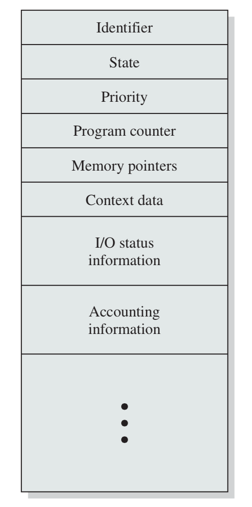

State diagram for the seven-state model.
*Processes
Early computers, as well as many modern embedded systems, did exactly one thing, or at least, exactly one thing at a time. At that time, the program had access to all the resources available in the system. Now, we expect that the OS supports multiple programs running concurrently. For that to work reliably, the operating system needs a way to manage the complexity and this has resulted in the notion of a process. We’ve already worked with processes, but most likely we didn’t know it at the time.
A process is a program in execution. It is composed of three things:
The instructions and data of the program (the compiled executable).
The current state of the program.
Any resources that are needed to execute the program.
Having two instances of the same program running counts as two separate processes. Thus, you may have two windows open for Microsoft Word, and even though they are the same program, they are separate processes. Similarly, two users who both use Firefox at the same time on a terminal server are interacting with two different processes.
We will take a slight detour to the behind-the-scenes view of how the operating system manages a process, so that we can have a mental model of what may happen when a program is executing. The operating system’s data structure for managing processes is the Process Control Block (PCB). This is a data structure containing what the OS needs to know about the program. It is created and updated by the OS for each running process and can be thrown away when the program has finished executing and cleaned everything up. The blocks are held in memory and maintained in some container (e.g., a list) by the kernel.
The process control block will (usually) have :
Identifier. A unique ID associated with the process; usually a simple integer that increments when a new process is created and reset when the system is rebooted.
State. The current state of the process.
Priority. How important this process is (compared to the others).
Program Counter. A place to store the address of the next instruction to be executed (*when needed).
Register Data. A place to store the current values of the registers (*when needed); also called context data.
Memory Pointers. Pointers to the code as well as data associated with this process, and any memory that the OS has allocated by request.
I/O Status Information. Any outstanding requests, files, or I/O devices currently assigned to this process.
Accounting Information. Some data about this process’s use of resources. This is optional (but common).
To represent this visually:

A simplified Process Control Block .
Almost all of the above will be kept up to date constantly as the process executes. Two of the items, notably the program counter and the register data are asterisked with the words “when needed”. When the program is running, these values do not need to be updated. However, when a system call (trap) or process switch occurs, and the execution of that process is suspended, the OS will save the state of the process into the PCB. This includes the Program Counter variable (so the program can resume from exactly where it left off) and the Register variables (so the state of the CPU goes back to how it was). The diagram below shows the sequence as the OS switches between the execution of process P_{0} and process P_{1}.
A process switch from P_{0} to P_{1} and back again .
Unlike energy, processes may be created and destroyed. Upon creation, the OS will create a new PCB for the process and initialize the data in that block. This means setting the variables to their initial values: setting the initial program state, setting the instruction pointer to the first instruction in main, and so on. The PCB will then be added to the set of PCBs the OS maintains. After the program is terminated and cleaned up, the OS may collect some data (like a summary of accounting information) and then it can remove the PCB from its list of active processes and carry on.
There are, generally speaking, three main events that may lead to the creation of a process :
System boot up.
User request to start a new process.
One process spawns another.
When the computer boots up, the OS is started and begins creating processes. An embedded system might have all the processes it will ever run created by this initialization process, but general-purpose operating systems will allow at least one of the other routes (if not both of them).
At boot time the OS starts up various processes, some of which will be in the foreground (visible to the user) and some in the background. A user-visible process might be the log in screen; a background process might be the server that shares media on the local network. The UNIX term for a background process is Daemon. You have already worked with one of these if you have ever used the ssh (Secure Shell) command to log into a Linux system; when you attempt to connect it is the sshd (Secure Shell Daemon) that responds to your connection attempt.
Users are well known for starting up processes whenever they feel like it, much to the chagrin of system designers everywhere. Every time you double-click an icon or enter a command line command (like ssh above) that will result in the creation of a process.
An already-executing process may spawn another. If you receive an e-mail with a link in it and click on that link1, the e-mail program will start up the web browser (another process) to open the web page. Or a program may break its work up into different logical parts to be parcelled out to subprograms that run as their own process (to promote parallelism or fault tolerance). When an already-executing program spawns another process, we say the spawning process is the parent and the one spawned is the child. Later on, we will return to the subject of relations between processes in UNIX.
Eventually, most processes die. This is sad, but it can happen in one of four ways :
Normal exit (voluntary)
Error exit (voluntary)
Fatal Error (involuntary)
Killed by another process (involuntary)
Most of the time, the process finishes because they are finished or the user asks them to. If the command is to compile some piece of code, when the compiler process is finished, it terminates normally. When you are finished writing a document in a text editor, you may click the close button on the window and this will terminate the program normally.
Sometimes there is voluntary exit, but with an error. If the user attempts to run a program that requires write access to the temporary directory, and it checks for the permission on startup and does not find it, it may exit voluntarily with an error code. Similarly, the compiler will exit with an error if you ask it to compile a non-existent file . In either case, the program has chosen to terminate (not continue) because of the error and it is a voluntary termination.
The third reason for termination is a fatal error occurring in the program, like a stack overflow error or division by zero. The OS will detect this error and send it to the program. Very often, this results in the involuntary termination of the offending program. A process may tell the OS it wishes to handle some kinds of errors (like in Java/C# with the try-catch-finally syntax) in which case the OS will send the error to the program which can hopefully deal with it. If so, the process may continue, otherwise, the unhandled exception will result in the involuntary termination.
The last reason for termination is that one process might be killed by another (yes, processes can murder one another. Is no-one safe?!). Typically this is a user request: a program is stuck or consuming too much CPU and the user opens task manager in Windows or uses the ps command (in UNIX) to find the offender and then terminates it with the “End Process” button (in Windows) or the kill command (in UNIX). However, programs can, without user intervention, theoretically kill other processes, such as a parent process killing a child it believes to be stuck (or timed out).
Obviously, there are restrictions on killing process: a user or process must have the rights to execute the victim. Typically a user may only kill a process he or she has created, unless that user is a system administrator. While killing processes may be fun, it is something that should be reserved for when it is needed.
Sometimes when a process is killed, all the processes it has spawned are killed as well (this is really cruel). Neither UNIX nor Windows works this way, however: a parent can outlive the death of its child and vice-versa.
In UNIX, but not in Windows, the relationship between the parent process and child process(es), if any, is maintained, forming a hierarchy. A process, unlike most plants and animals, reproduces asexually: a process has one parent, but may have zero or more children. A process and all its descendants form a process group and certain operations like sending a signal (e.g., the terminate signal Ctrl-C) can be sent to the whole group, letting each process decide what to do with it. .
In UNIX the first process created is called init and it is the parent of all processes (eventually), much like the Object class in Java is the superclass of all classes in the system. Thus in UNIX we may represent all processes as a tree structure, where each node is a process, each node may have zero or more children, and moving up the hierarchy will eventually take us to init.
In Windows, a process that spawns another process gets a reference to its child, allowing it to exercise some measure of control over the child. However, this reference may be given to another process (so, the concept of adoption exists) meaning there is no real hierarchy. A process in UNIX cannot disinherit a child .
When a process terminates, voluntarily or otherwise, it does so with a return code, just as a function often returns a value. If the command is issued on the command line (e.g., cat /var/log/syslog) or from double clicking an icon, the return value is generally ignored (or at least, not presented to the user). In UNIX, when a parent process spawns a child, it can get the code that process returns. Usually, a return value of zero indicates success and other values indicate an error of some sort. Normally there is some sort of understanding between the parent and child processes about what a particular code means.
When a child process finishes execution, until such time as the parent comes by to collect the return value, the child continues in a state of “undeath” we call a zombie. This does not mean that the process then shuffles around the system attempting to eat the brains of other processes; it just means that the process is dead but not gone. The program has finished executing, there is still an entry in the PCB list, and the process holds on to its allocated resources until such time as the return value is collected. Only after the return value is collected can it be cleaned up. Usually, a child process’s result is eagerly awaited by its parent and the wait call collects the value right away, allowing the child to be cleaned up (or, more grimly, “reaped”). If there is some delay for some reason, the process is considered a zombie until that value is collected.
If a child process’s parent should die before the child does, the process is called an orphan. In UNIX any orphan process is automatically adopted by the init process, making sure all processes have a good home. By default, init will just wait on all its child processes (and do nothing with the return values), ensuring that when they are finished, they do not become zombies. Sometimes a program is intentionally orphaned: it is spawned to run in the background (e.g., when starting up a service or daemon on the system). This would be cruel, except that processes, as far as anyone knows, do not have feelings.
As you might imagine, at any given time, a process is running or not running. The first two states of the model are therefore “Running” and “Ready”.
A program that requests a resource like I/O or memory may not get it right away. This is not to say the program will never get it, just that it does not have it right now. Sometimes the program needs user input, and as far as the computer is concerned, the user moves at glacial speed. In any case, the program wants to continue but cannot until it gets what it is waiting for. If the scheduler picks a process that is waiting for user input, nothing will be happening while the program is waiting for input, so the CPU’s time would be wasted. Thus, we should be able to mark a process as “not ready to proceed”, which gives us our “Blocked” state.
Earlier we discussed that a UNIX process may be finished but a zombie, because its parent has not (yet) come by to collect its return value. The process is not ready to run (it has finished running) and it is not waiting for a resource, so it does not qualify for Ready or Blocked. Thus, we need a state to represent that it is finished but not yet cleaned up: Terminated.
The fifth and final state will be the “New” state: a process that has just been defined. Suppose a user wants to run a new process. The OS will first perform the necessary administrative tasks: define an identifier for the process, instantiate the PCB object, and put the process in the New state. The OS has created the process but has not committed itself to execution thereof. This may be because the system limits the number of concurrent processes for performance reasons. When the process is in the New state is is typically not in memory, but on disk instead .
Thus, with the two new states added, the five states of a process in the system are:
Running: Actively executing right now.
Ready: Not running, but ready to execute if selected by the scheduler.
Blocked: Not running, and not able to run until some event happens.
New: Just created but not yet added to the list of processes ready to run.
Terminated: Finished executing, but not yet cleaned up (reaped).
With five states, we will have significantly more transitions between the states. The diagram below shows the five-state model:
State diagram for the five-state model.
There are now eight transitions, most of which are similar to what we have seen before:
Create: The process is created and enters the New state.
Admit: A process in the New state is added to the list of processes ready to start, in the Ready state.
Dispatch: A process that is not currently running begins executing and moves to the Running state.
Suspend: A running program pauses execution, but can still run if allowed, and moves to the Ready state.
Exit: A running program finishes and moves to the Terminated state; its return value is available.
Block: A running program requests a resource, does not get it right away, and cannot proceed.
Unblock: A program, currently blocked, receives the resource it was waiting for; it moves to the Ready state.
Reap: A terminated program’s return value is collected by a wait and its resources can be released.
There are two additional “Exit” transitions that may happen but are not shown. In theory, a process that is in the Ready or Blocked state might transition directly to the Terminated state. This can happen if a process is killed, by the user or by its parent (recall that parent processes can generally kill their children at any time, something the law thankfully does not permit). It may also happen that the system has a policy of killing all the children of a parent process when the parent process dies.
We can expand on the five state model with something else: the idea that a process might be swapped out to disk rather than in memory. Memory can have multiple processes in it and if the executing process gets blocked, another can be swapped into memory. Unfortunately, however, it is quite possible that the user wants to have more processes running than can currently be accommodated in main memory. The problem is not the PCBs, which are relatively small (a few thousand bytes), but the stack and heap space allocated to the running program can be very large (on the order of gigabytes).
With no other place to put them, we have to put some processes on disk, and this is what we know as swapping. Thus, when the demands for memory exceed the available memory, some of the processes will be moved to disk storage to make room for other processes. This is a notably expensive operation: swapping a process to disk might mean transferring several hundred megabytes of data, or even a few gigabytes, which, from the perspective of the CPU, takes about seven eternities. Then, when that process is going to run again, the OS will need to load it back in to memory, which, again, will take just as much time as it took to flush it out. So this is something to be done only when necessary.
Because the OS does not want to spend any more time swapping the process in and out of memory than is necessary, (and we need to know if a particular process is in memory or on disk) we need a new state: swapped. Ideally, it will only swap a process to disk if it is blocked. It cannot run anyway, so if it has to choose a process to put on disk, a blocked one is better than a ready one. A process swapped to disk then enters that sixth state, swapped, which means it is blocked and not in main memory.
There are two scenarios that may have occurred to you that tell us the swapped state on its own is not sufficient. The first is: what if all processes are ready but there is not enough memory space? Or, in other words, what if we need to swap out a process that is ready? The second is: what if the event the blocked process was awaiting has taken place (e.g., the user presses a key) and the process could proceed? How can we tell which processes currently swapped out have had their desired events occur and which have not? We would not like to guess in the second scenario, because swapping a process into memory is time consuming.
The solution to both problem scenarios is to split the swapped state in two: Ready/Swapped (ready to run, and currently not in memory) and Blocked/Swapped (not ready to run, and currently not in memory). That gives us, finally, the seven-state model, a minor variation of the five-state model:
State diagram for the seven-state model.
The Admit transition is modified to show that by default the new process does not start in main memory. Two new transitions, Swap In and Swap Out, are added to show a process being loaded into main memory and written out to disk respectively. Finally, there is a second Unblock transition, where a Blocked/Swapped process gets whatever it was waiting for and moves to the Ready/Swapped state, because it can now run (but is still on disk).
As in the five-state model, there are additional “Exit” transitions that may happen but are not shown. If a process is killed, for example, regardless of whether it is in memory or on disk, it will move to the Terminated state.
Security advice: don’t click on links you receive by e-mail.↩